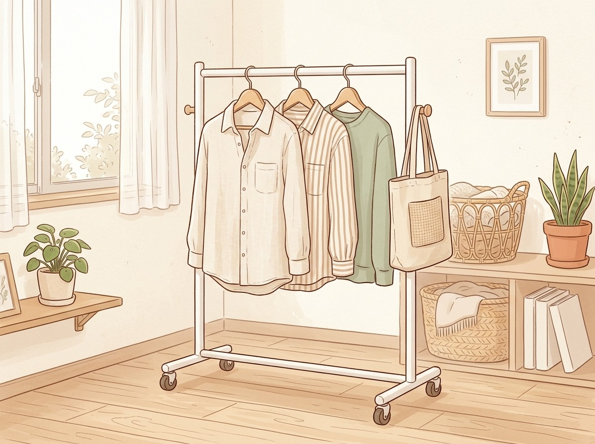
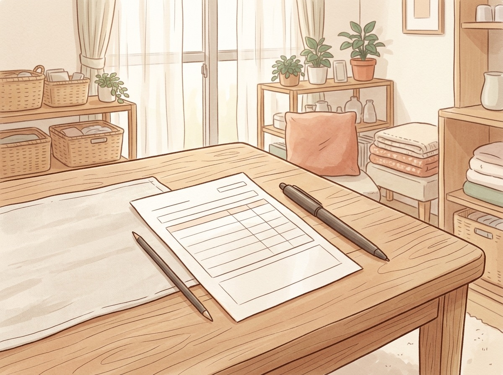
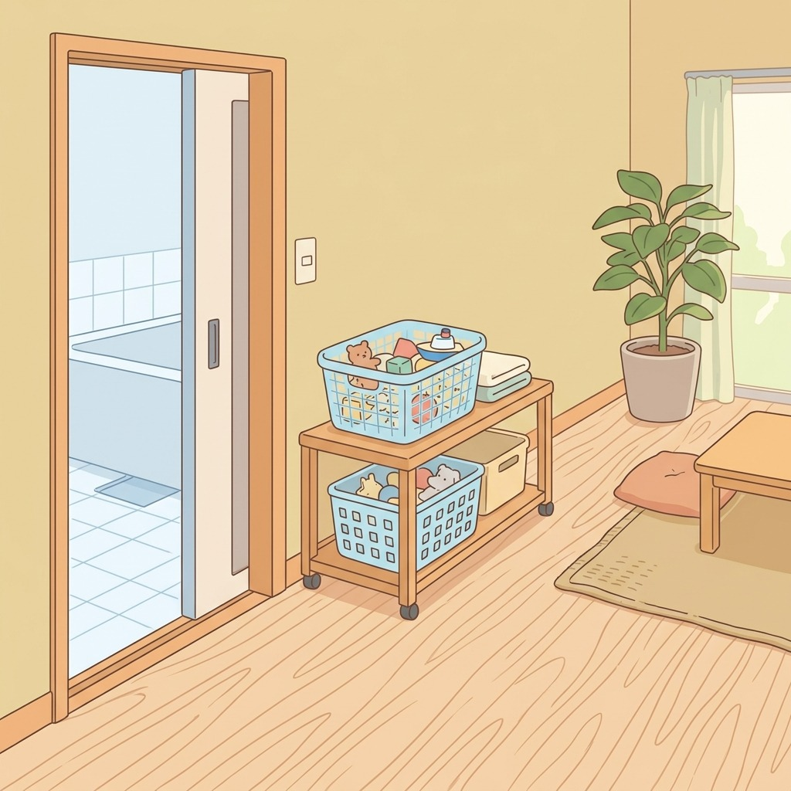
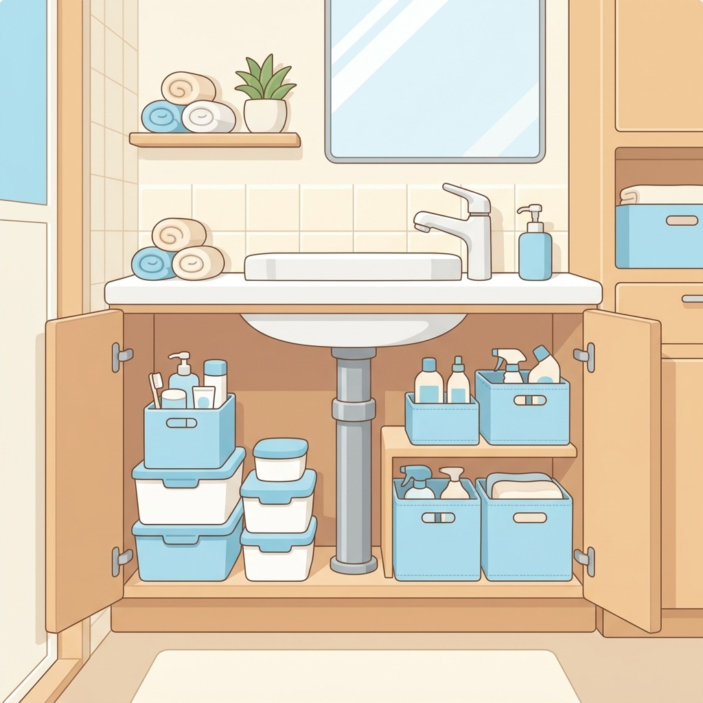
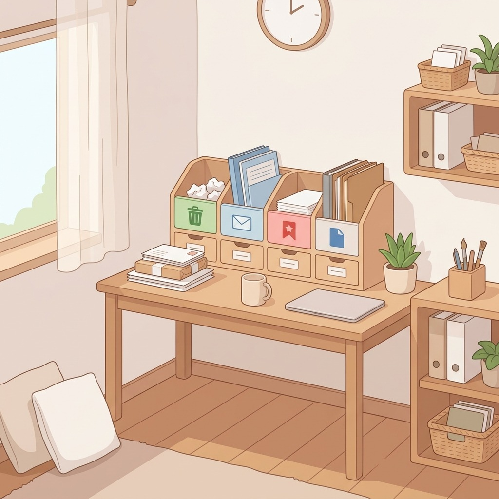
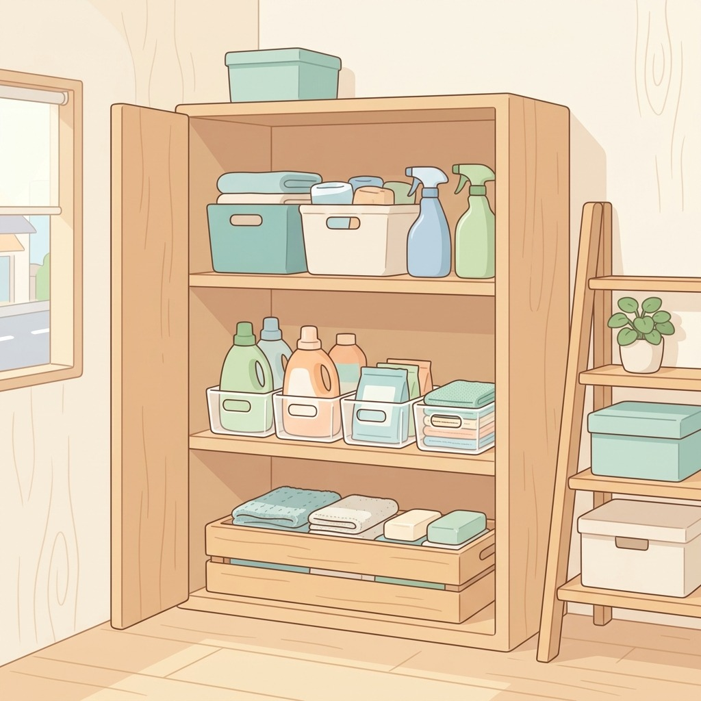

狭い家でも、
すっきり暮らす。
収納・キッチン・洗面所の「困った」を減らすアイデアと、買う前に迷わない選び方ガイド。イラストでわかりやすく。
PICK UP今週のピックアップ
NEW

選び方
NEWハンガーラックの選び方
狭い部屋に合うハンガーラックの選び方

固定費
電気料金の明細の見方
明細は4つの欄で構成されていること

アイデア
おもちゃは浴室に住ませない
入浴後にカゴごと出すだけの乾かし方
CATEGORYカテゴリー


IDEAS新着アイデア
もっと見る →アイデア
NEWおもちゃは浴室に住ませない
入浴後にカゴごと出すだけの乾かし方
アイデア
NEWパソコン机が狭くなる理由
物の置き方を変えて、作業できる広さに
アイデア
NEWシンクまわりの道具、乾いてる？
スポンジ・ふきん・ブラシの置き方を見直す

アイデア
NEW洗面台下は配管の左右で分ける
全部出してから戻すまでの順番

アイデア
NEW郵便物をためない4つの仕分け
ワンルームでも紙が散らからない流れ

アイデア
洗剤ストックを増やさない5つの手
買いすぎと使い忘れを防ぐしまい方
PR収納・暮らしに役立つサービス


BUYING GUIDE選び方ガイド
ガイド一覧へ →MONEY固定費の見直し
一覧へ →PR固定費を下げるサービス
毎日のくらしメモは Instagram と YouTube ショートで更新中